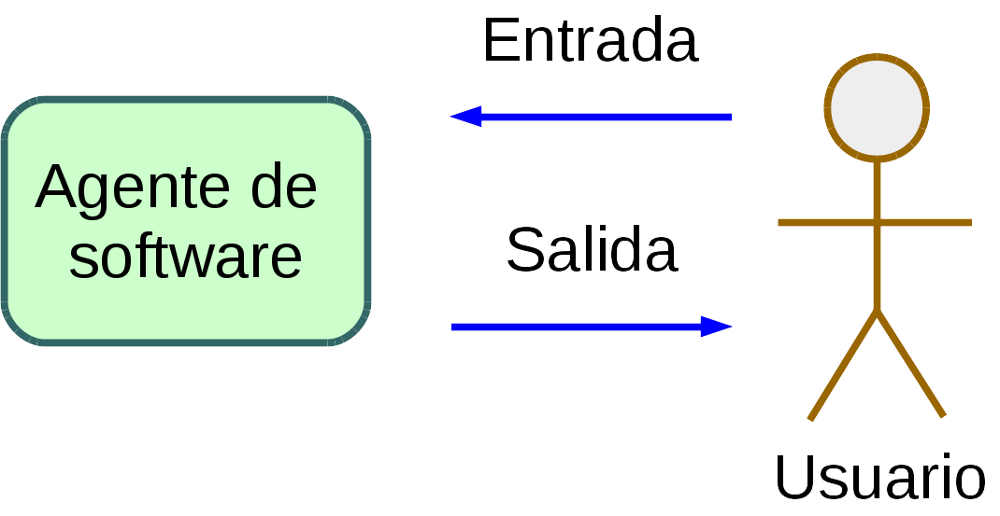
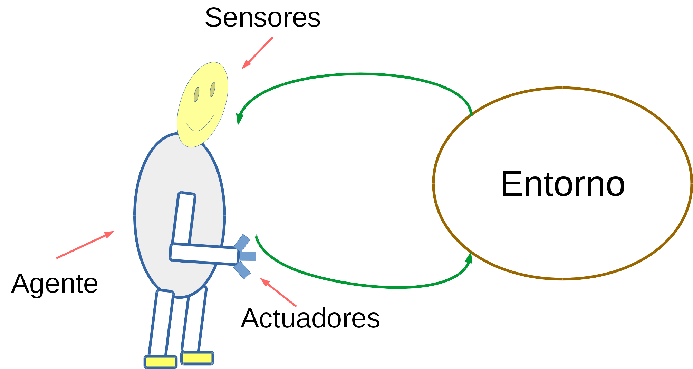
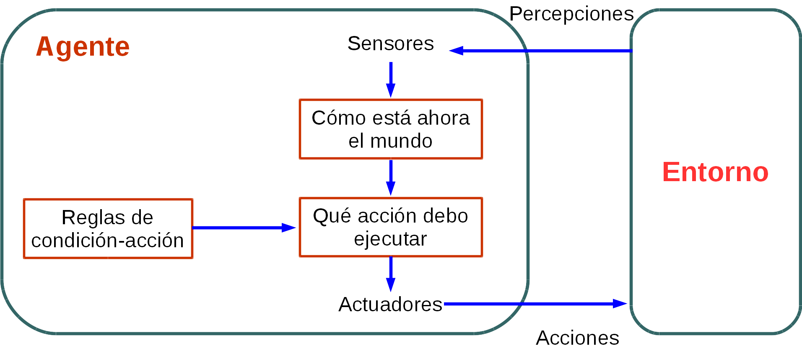
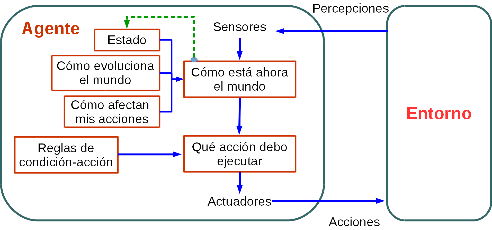

Un agente es un sistema que procesa información y produce una salida a partir de una entrada dada. Los agentes se pueden clasificar de diferentes formas (Ertel, 2017):
- Agentes de software: son los que se usan principalmente y consisten en un programa informático que que calcula un resultado a partir de una entrada dada por el usuario.

- Agentes de hardware: también llamados robots autónomos, que también son ampliamente empleados, poseen uno o más sensores y uno o más actuadores que le permiten llevar a cabo las acciones en el entorno.

Con respecto a la inteligencia del agente, debemos distinguir entre agentes reflejo (aquellos que únicamente reaccionan a una entrada) y agentes con memoria (aquellos que almacenan las decisiones pasadas que han tomado). Por ejemplo, un robot que conduce un auto (agente con memoria) es capaz de conocer a través de sus sensores su posición exacta (y el tiempo) y con ello derivar la velocidad a la que se mueve. Sin embargo, un agente reflejo no podría hacer esta tarea (Ertel, 2017).
Tipos de Agentes
A continuación se presenta una descripción más detallada de los tipos de agentes que existen (Geeks for Geeks, 2018):
Agentes reflejo simple
Este tipo de agentes únicamente toma decisiones en base a la información que percibe en el instante, sin considerar la información histórica. Por ello, este agente funciona en base a reglas condición - acción. Si la condición es verdadera, la acción se ejecuta, caso contrario no. Es importante señalar que este tipo de agentes es exitoso únicamente cuando el entorno es totalmente observable. Para los agentes reflejo trabajar en entornos parcialmente observables puede ocasionar que caigan en bucles infinitos, por ello, se suele implementar acciones que se toman de forma aleatoria. Las principales limitaciones que tienen estos agentes son las siguientes (Geeks for Geeks, 2018):
- Inteligencia muy limitada.
- Falta de conocimiento de partes no perceptivas del estado (partes que no se pueden sensar).
- Suelen ser muy grandes para generar y ser almacenados.
- Si el entorno cambia, ello obliga a que las reglas deban ser actualizadas.
En la siguiente ilustración podemos observar el esquema de la estructura de este tipo de agente.

Agentes reflejo basados en modelos
Este tipo de agentes busca la regla que coincida con la situación actual. Pueden manejar entornos parcialmente observables a través del uso de un modelo del mundo. Este tipo de agentes realizan un seguimiento del su estado interno que se ajusta de acuerdo a lo que percibe del mundo y que depende de su historial de percepción. El estado actual se almacena en el agente a través de alguna estructura que describe la parte del mundo que no se puede observar. A fin de actualizar la información del estado se requiere la siguiente información (Geeks for Geeks, 2018):
- Cómo el mundo evoluciona independientemente del agente
- Cómo las acciones del agente afectan al mundo
A continuación presentamos un esquema de este tipo de agente.
